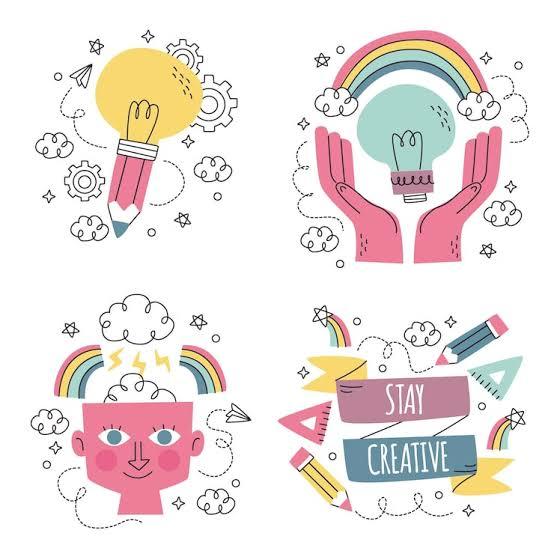

Hoy quiero contar cómo una simple tarde frente a la computadora se convirtió en un momento de inspiración. Mientras practicaba HTML y CSS, descubrí que cada línea de código es como una pieza de un rompecabezas que poco a poco va tomando forma.

Lo más bonito de aprender a programar es que no hay límites: puedes crear desde un blog sencillo hasta aplicaciones completas. La clave está en la constancia y en disfrutar el proceso de aprendizaje.
Esta entrada es un recordatorio de que la creatividad se encuentra en los detalles más pequeños, incluso en el diseño de una página web.